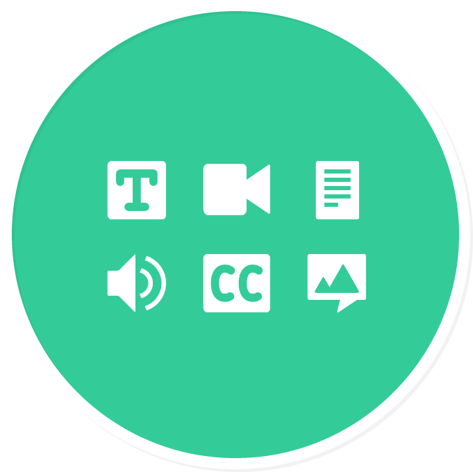

-
Paving the way toward inclusive Open Education Resources.
Floe provides the resources needed to enable access to personally relevant, engaging learning opportunities for the full diversity of learners and content producers.
-
Watching a video in a lout room or learning a new language?
Being able to transform, augment, and personalize educational resources to fit individual needs is essential for an inclusive learning experience.
-

Preference editing tools help learners discover and customize resources. User Interface Options allows learners to indicate their preferences and get exactly what they need.

-

If a learner doesn't know what they need, the Preference Exploration Tool offers a set of starter preferences to try. Resources need to be flexible and multi-modal to adapt to a range of learning needs - from enabling content to be spoken aloud so it's easier to follow along to enhancing keyboard interactions so it's easier to use.
Apply these preferences to other resources and devices by saving them to the Global Public Inclusive Infrastructure.
-

-
The HTML5 Video Player offers a multi-modal experience out of the box with keyboard access, captions, transcripts, and responsiveness to user preferences. Also with the Video Player, learners can provide feedback if a resource doesn't fit their preference needs. A learner can request captions or create captions themselves for the video.
- 
-
Creating content to meet user needs
The Inclusive Design Learning Handbook offers tips for producing rich resources to help reach a diversity of learners. Enhance content creation systems to produce more accessible content with open source tools. The Metadata Editor generates rich metadata and encourages authors to add accessibility features. This way a learner with unique preferences, such as captions for audio content, will be matched with resources that fits their needs.
-
See Also
Floe WikiResource for Floe design, development & project planning
Floe onGithubRepository of all Floe source code
WATCHING TV BY MELISSA GUTIERREZ Laurel likes to watch TV from her table but I don't like her too close, so I had her move back after I took this photo with her feet up. If you're curious why the captions are on, it's to help reinforce word recognition.